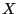

Next: Java Attribute Examples Up: Attribute Examples Previous: C++ Attribute Examples
Consider the case where you have a Gurobi model  . You can
retrieve the number of variables in the model by querying the
NumVars model attribute
using the
Get method:
. You can
retrieve the number of variables in the model by querying the
NumVars model attribute
using the
Get method:
cols = m.Get(GRB.IntAttr.NumVars);
If you've performed optimization on the model, the optimal objective value can be obtained by querying the ObjVal model attribute:
obj = m.Get(GRB.DoubleAttr.ObjVal);
If you'd like to query the value that a variable takes in the computed solution, you can query the X attribute for the corresponding variable object:
vars = m.GetVars()
for (int j = 0; j < cols; j++)
xj = vars[j].Get(GRB.DoubleAttr.X)
You can also query the value of  for multiple variables in a single
Get call
on the model double[] xvals = m.Get(GRB.DoubleAttr.X, m.GetVars()))
For each attribute query method, there's an analogous routine. To set the upper bound of a variable, for example:
v = m.GetVars()[0] v.Set(GRB.DoubleAttr.UB, 0)(In this example, we've set the upper bound for the first variable in the model to 0).